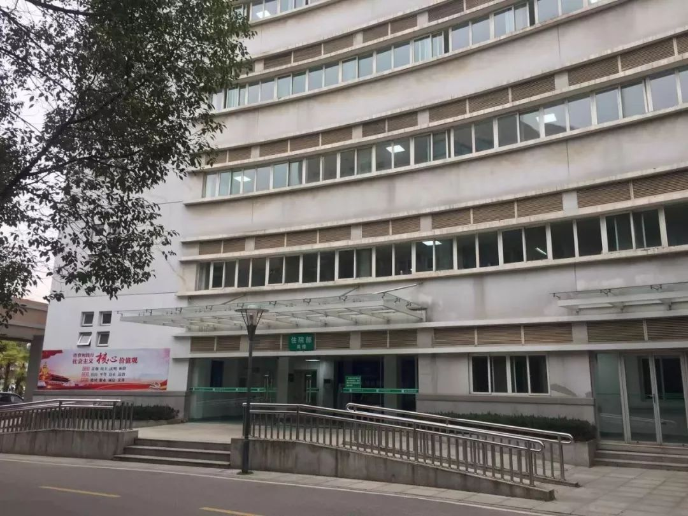

上千名被感染的武汉医护，如何扛过最艰难的一个月
原文链接 备份链接 对病毒的未知、医疗物资缺乏，又因高强度的工作压力影响到免疫力，导致医护感染达到高峰。随着医护人员防护意识、对病毒认识的增强，相关防护措施到位，后期被感染的医护人员应该越来越少 ****文 | 《财经》 …

不管是专家院士还是临床医生，对一个疾病的认知都有个过程

黄朝林。 图/中新网
1月19日凌晨，武汉市卫健委举行新闻发布会，针对武汉市新型冠状病毒感染的肺炎综合防控答记者问。当时，湖北省医疗组专家、武汉市金银潭医院副院长、主任医师黄朝林作为专家出席发布会并答记者问。三天后，22日，他自己的新型冠状病毒核酸检测结果显示为阳性——黄朝林也确诊感染了。
如今，已痊愈的黄朝林仍在家中隔离，领导要求他以休息为主，不过他却闲不住。2月13日，据湖北省卫健委发布的疫情通报，该省一下子增加了1万多名确诊患者。官方解释称，“从今天起，湖北省将临床诊断病例数纳入确诊病例数进行公布。”黄朝林给《中国新闻周刊》发来这条消息，并加了一句话：“临床诊断病例＝疑似病例+影像学检查。不再需要核酸检测！”
一个医生的“战疫”
从2019年12月29日接到武汉市卫健委的电话开始，黄朝林的“战疫”就已经打响了。作为湖北省与武汉市突发公共卫生事件医疗救治定点医院，金银潭医院是当地第一家新冠肺炎患者定点收治医院。
29日是星期日，黄朝林上午在医院病房转了一圈，下午回家休息。到家不到两个小时，就接到武汉市卫健委的电话，要求他赶到湖北省中西医结合医院去排查可疑病例。
据《长江日报》报道，当时，黄朝林与他们医院的ICU主任吴文娟戴上N95口罩，穿了件普通工作服就去了湖北省中西医结合医院。7个可疑病人已被安排在该院呼吸科相对独立的区域进行了隔离，院呼吸与重症医学科张继先主任给他们介绍了这7个病人的收治情况，带他们一一查看病人。
大家分析讨论一番后，黄朝林认为，这些病人可能具有传染性，在综合医院对其他病人不安全，需要转到专门收治传染病人的金银潭医院。
黄朝林用电话向金银潭医院院长张定宇与武汉市卫健委做了汇报，调来了负压救护车，并让负责接收的医护人员穿好三级防护服。除一位不愿去金银潭医院的轻症病人外，6位病人的转运从傍晚持续到晚上11点多。
黄朝林告诉《中国新闻周刊》，在他的印象里，大约从1月6日开始，金银潭医院接收到越来越多的“不明原因肺炎”病人。而黄朝林对这些患者的流行病学调查，从12月29日当天夜里就开始了。
1月25日，黄朝林与同事对最初感染的41例确诊病例进行的回顾性分析，论文发表在《柳叶刀》杂志上。该论文分析的41例病例中，有14例没有华南海鲜市场接触史，但仍被感染。对此，黄朝林推测有两个原因：“第一个就是新冠病毒的暴露源可能不只是华南海鲜市场，可能有多源性的感染；第二个是可能存在人际间的传播，即从华南海鲜市场感染的病人通过其他途径，感染了无华南海鲜市场接触史的其他患者。虽然这部分患者没有暴露在华南海鲜市场，但也可能因人际间传播感染。”
在自己患病之前的25天里，黄朝林除了要给患者看病、做科研，他还有另外一个重要工作，就是要接待来自省、市与国家三个级别卫健委的多个专家组。截至1月20日，先后就有国家卫健委的三批专家组抵汉调查。
疫情初期还没有病毒核酸检测。李兴旺、曹彬等国家卫健委第一批专家组与湖北省市卫健委一起制定了早期的诊断标准。当时，患者需要同时具备有华南海鲜市场接触史，发热、缺氧、呼吸困难等临床症状与CT影像学等条件，才能被确诊为新冠肺炎。
对此，黄朝林说，“据我所知，诊断标准一共做了5次修改，五版诊疗方案。不管是专家院士，还是临床医生，对于一个疾病的认知都有个过程。初期的诊断标准是根据当时的认知能力和认知水平制定的，后来随着病例增多和对病情的了解加深，诊断标准和治疗方案也在慢慢地完善，这应该是可以理解的。”
此前，金银潭医院院长张定宇也告诉《中国新闻周刊》，“疫情初期，在正式的多版诊疗方案出台之前，有关部门做过一个诊疗指南，供内部使用。当时，我们强调流行病学史比较多，不像现在，没有华南海鲜市场接触史的病人更多一些。当时专家都把华南海鲜市场接触史作为流行病学意义上很重要的依据，同时也作为诊断的要求和条件。这不是某一个专家的意见，而是大家的一个共识，整体的专家意见是由国家和省、市的专家一起制定的。这跟事件本身发展的认知水平有一定的关系。”

武汉金银潭医院。 本刊记者/彭丹妮 摄
除了接待专家组、做科研之外，随着疫情发展，越来越多的病人需要诊疗，外地前来支援的医务人员也需要交接安置。这些都是作为业务副院长的黄朝林的工作，当时，他每天最多只有四个小时的睡眠时间。过于疲劳让他的免疫力下降。这样的工作状态似乎也能在他的微信中得到印证：黄朝林的微信头像和朋友圈封面都是在医院拍摄的，个性签名则是“踏实做人，认真做事。”
一个病人的“战疫”
黄朝林回忆说，从1月17日开始，他就感到身体很不舒服，开始干咳。一开始，他还误以为这是此前就有的普通感冒造成的，直到确诊后，才意识到这是感染的早期表现。
回想自己的感染原因，黄朝林想到了1月10日晚，在他换下防护服、摘下口罩，从门诊回办公室的过程中，一位病人的女儿和女婿认出了他，直接跑到他面前跪下。黄朝林赶紧把两个人扶起来，并询问了病人的情况。在交流过程中，夫妻俩一人拉着黄朝林的一只手，且三人均未戴口罩。三天后，这对夫妇也确诊了新冠肺炎。在黄朝林印象中，这是他唯一可能暴露的机会。
黄朝林是22日下午五点左右做的病毒核酸检测，晚上9点出的结果，显示为阳性。他在晚上10点左右又去查了肺部CT，结果为双肺出现较轻阴影，已有磨玻璃样病灶。处理完手头的工作，已是23日凌晨3点，黄朝林靠在办公室的沙发上休息，此时他已经出现了畏寒、发热的症状。
23日，黄朝林脱下防护服，住进了医院的隔离病房，从医生变为了病人。入院时，他的氧饱和度不到93，属于重症病人。也是同一天，他在参加克力芝试药的临床观察知情同意书上签下自己的名字，以身试药，成为了380名“试药人”中的一员，他要通过自己的治疗，来验证治疗HIV病毒的克力芝治疗新冠肺炎的临床疗效和安全性。
住院后的前十几天里，治疗并不顺利，“有发热、缺氧的表现，有时感觉肺要咳出来了。”黄朝林也出现了肺部损伤和呼吸困难的症状。在不吸氧的情况下，他的氧饱和度一度最低只有80左右。还出现了克力芝的副作用：腹泻、恶心、呕吐等胃肠道反应。但黄朝林说，“可以耐受。”
这样的过程持续了十几天。除了克力芝，这段时间里，中日友好医院副院长曹彬教授与武汉同济医院宋建新教授等专家还对他进行了激素治疗和鼻导管给氧、肺部通气等综合治疗和支持。
“确诊两周后，我的病情开始慢慢地好转。”直到2月4日，病情才稳住。黄朝林说，“我是在2月2号进行的病后第一次核酸检测，结果为阴性。间隔48小时后，也就是2月4号，我进行了第二次核酸检测，结果同样显示阴性，符合出院标准。之后就出院了，现在在家隔离。”
在采访过程中，记者听到黄朝林仍偶有咳嗽。他解释说，“这是一种刺激性咳嗽。已出院的病人会在不同程度上出现这种刺激性咳嗽甚至气喘的情况，彻底恢复的话还需要时间，但不会对正常生活造成很大影响。”他还解释说，免疫力下降是他病情较为严重的主要原因，但多数新冠肺炎患者还是以轻症为主。
黄朝林说，“目前疫情形势比较紧迫，我作为专家和副院长，应该尽快回到工作岗位。”
值班编辑：石若萧
推荐阅读
▼


*VR看房亲身体验，恒大全国楼盘即将特大优惠*
*点击“阅读原**文”了解更多详情 *
原文链接 备份链接 对病毒的未知、医疗物资缺乏，又因高强度的工作压力影响到免疫力，导致医护感染达到高峰。随着医护人员防护意识、对病毒认识的增强，相关防护措施到位，后期被感染的医护人员应该越来越少 ****文 | 《财经》 …
原文链接 备份链接 【财新网】（记者 王和岩）疫情袭来已遍布全国各省份。在距离武汉最北的省份黑龙江，聚集性疫情成为防控重点。截至2月6日24时，各地共报告新型冠状病毒感染的肺炎聚集性疫情48起、发病194人，波及或暴露630人，死亡3 …
原文链接 备份链接 他曾说，“等病好了，还上一线，不想当逃兵。” 2月7日中午13:02，中央纪委国家监委网站发布消息，经中央批准，国家监察委员会决定派出调查组赴湖北省武汉市，就群众反映的涉及李文亮医生的有关问题作全面调查。 2月6日 …
原文链接 备份链接 【财新网】（记者 周泰来 实习记者 黄晏浩 陈丽金）湖北省鄂州市由于新冠疫情防控压力大，已公开呼吁全市退休、离职医护人员和个体医务工作者积极参与疫情防控工作。据鄂州市政府官网，鄂州市新型冠状病毒感染的肺炎防控指挥部 …
原文链接 备份链接 杨晨还在等通知。他在等待“十号令”带给他以及他的家庭命运的转机，他是一位“武汉病人”的家属。 让他有所期许的“十号令”，是2月2日发出的。按照“十号令”的要求，自通告发布之日起，对全市经发热门诊诊断有肺炎症状的发热病人 …